以需求为一级维度；源数据取数方式在文末「源数据统一梳理」统一说明。参照 Excel：docs/PID销售趋势映射表.xlsx（需求 / 映射表 / 源数据路径）。
| 优先级 | — |
|---|---|
| 影响面 | — |
| 价值 | 1、原先每天0.5小时人工处理，频次一个月30天，每个月可节省 15小时 2、系统化，可介入AI进行数据分析 3、支持更复杂的页面展示，内容明细及跳转 |
1店PID维度的数据监测工具表-7天数据 中的 GMV计算 结构与字段。1店PID维度的数据监测工具表-7天数据-》GMV计算| 类型 | 目标字段 | 计算逻辑（A列） | 关联字段 | 源数据表 | 源字段名称 | 在源字段第几列 |
|---|---|---|---|---|---|---|
| 计算 | 日期 | 提取Paid Time的日期 | — | — | Paid Time | 28 |
| 映射 | PID | 全渠道商品表.父ASIN | 全部笔订单（Seller SKU）与 全渠道商品表（父ASIN） | 全渠道商品表 | 父ASIN | — |
| 映射 | 营业总额 | 全部笔订单.Cancelation/Return Type、SKU Subtotal Before Discount（=SUMIFS(订单完整!$Q:$Q,订单完整!A:A,D11)-SUMIFS(订单完整!$Q:$Q,订单完整!A:A,D11,订单完整!$H:$H,"Cancel")） ---- 备注：剔除掉取消的订单 | 全部笔订单（Seller SKU）与 全渠道商品表（父ASIN） | 全部笔订单 | Cancelation/Return Type、SKU Subtotal Before Discount | 4,13 |
| 映射 | 商家折扣 | 全部笔订单.Cancelation/Return Type、SKU Seller Discount（=SUMIFS(订单完整!$S:$S,订单完整!A:A,D11)-SUMIFS(订单完整!$S:$S,订单完整!A:A,D11,订单完整!$H:$H,"Cancel")）---- 剔除掉取消的订单 | 全部笔订单（Seller SKU）与 全渠道商品表（父ASIN） | 全部笔订单 | Cancelation/Return Type、SKU Seller Discount | 4,15 |
| 映射 | 运费 | 全部笔订单.（Original Shipping Fee（正常运费）- Shipping Fee Seller Discount（卖家补贴）） ---- 剔除掉取消的订单 | 全部笔订单（Seller SKU）与 全渠道商品表（父ASIN） | 全部笔订单 | Cancelation/Return Type、Original Shipping Fee、Shipping Fee Seller Discount | 4,18,19 |
| 计算 | 总GMV | 总GMV=营业总额-商家折扣+运费（=E13-F13+G13） | — | — | — | — |
| 映射 | 单量 | 全部笔订单.Cancelation/Return Type、Quantity、Order Amount（=SUMIFS(订单完整!$N:$N,订单完整!A:A,D13)-SUMIFS(订单完整!$N:$N,订单完整!A:A,D13,订单完整!$H:$H,"Cancel")-SUMIFS(订单完整!$N:$N,订单完整!A:A,D13,订单完整!AC:AC,"0")） 备注：剔除掉取消的订单，以及订单金额为0的订单，去重 | 全部笔订单（Seller SKU）与 全渠道商品表（父ASIN） | 全部笔订单 | Cancelation/Return Type、Quantity、Order Amount | 4,10,25 |
| 映射 | 补贴 | 全部笔订单.Cancelation/Return Type、SKU Platform Discount（=SUMIFS(订单完整!$R:$R,订单完整!A:A,D13)-SUMIFS(订单完整!$R:$R,订单完整!A:A,D13,订单完整!$H:$H,"Cancel")）---- 备注：剔除掉取消的订单 | 全部笔订单（Seller SKU）与 全渠道商品表（父ASIN） | 全部笔订单 | Cancelation/Return Type、SKU Platform Discount | 4,14 |
| 映射 | 每单补贴 | 每单补贴=补贴/单量（=J13/I13） | 全部笔订单（Seller SKU）与 全渠道商品表（父ASIN） | 全部笔订单 | Cancelation/Return Type、Original Shipping Fee、Shipping Fee Seller Discount | 4,18,19 |
| 计算 | 店铺 | 店铺=导出的店铺，需要人工设置（根据导入的文件进行适配） | — | — | — | — |
| 映射 | 实付总价（折扣价-补贴+运费） | 全部笔订单.Cancelation/Return Type、SKU Subtotal After Discount、Shipping Fee After Discount（=SUMIFS(订单完整!D:D,订单完整!A:A,D7)-SUMIFS(订单完整!D:D,订单完整!A:A,D7,订单完整!$H:$H,"Cancel")） 备注：SKU Subtotal After Discount（折扣后金额 商品售价） + Shipping Fee After Discount（补贴后客户支付运费） | 全部笔订单（Seller SKU）与 全渠道商品表（父ASIN） | 全部笔订单 | Cancelation/Return Type、SKU Subtotal After Discount、Shipping Fee After Discount | 4,16,17 |
| 计算 | 客单价（实付总价/单量） | 客单价=实付总价（折扣价-补贴+运费）/单量，取小数点两位数（=M6/I6） | — | — | — | — |
需求一达成的目标：PID 维度 GMV 计算表，字段与「1店PID维度的数据监测工具表-7天数据-》GMV计算」一致，供数据看板及后续分析使用。
GMV 计算表最终呈现示意
下图为需求一 GMV 计算表的目标呈现效果：按日期、按 PID（及辅助列）展示营业总额、商家折扣、运费、总GMV、单量、补贴、每单补贴、店铺、实付总价（折扣价-补贴+运费）、客单价（实付总价/单量）等字段，与映射表「GMV计算」一致，供数据看板取数。
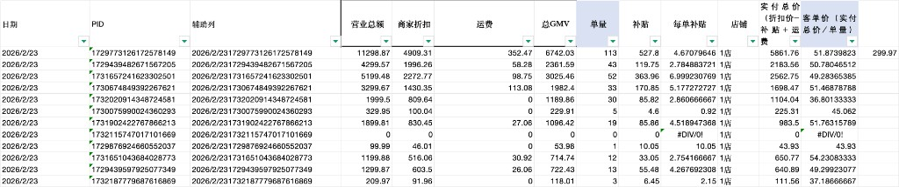
| 优先级 | — |
|---|---|
| 影响面 | — |
| 价值 | 1、原先每天0.5小时人工处理，频次一个月30天，每个月可节省 15小时 2、系统化，可介入AI进行数据分析 3、支持更复杂的页面展示，内容明细及跳转 |
1店PID维度的数据监测工具表-7天数据 中的 数据看板 结构与字段。1店PID维度的数据监测工具表-7天数据-》数据看板| 类型 | 目标字段 | 计算逻辑（A列） | 关联字段 | 源数据表 | 源数据表对应的表名 | 源字段名称 | 在源字段第几列 |
|---|---|---|---|---|---|---|---|
| 计算 | 日期 | 提取导出文件的日期范围（或任务调度入参），写入 sdt（YYYYMMDD） | — | product_list | ods_traffic_file_tiktok_product_list_di | （表头/文件名） | — |
| 计算 | PID | 直接取源表：product_list.ID | — | product_list | ods_traffic_file_tiktok_product_list_di | ID | — |
| 映射 | 商品交易总额4 | product_list.GMV | — | product_list | ods_traffic_file_tiktok_product_list_di | GMV | 4 |
| 映射 | 成交件数5 | product_list.成交件数 | — | product_list | ods_traffic_file_tiktok_product_list_di | 成交件数 | 5 |
| 映射 | 订单数6 | product_list.订单数 | — | product_list | ods_traffic_file_tiktok_product_list_di | 订单数 | 6 |
| 映射 | 商品卡GMV31 | product_list.商品卡 GMV | — | product_list | ods_traffic_file_tiktok_product_list_di | 商品卡 GMV | 32 |
| 映射 | 直播GMV15 | product_list.直播 GMV | — | product_list | ods_traffic_file_tiktok_product_list_di | 直播 GMV | 16 |
| 映射 | 短视频GMV23 | product_list.视频 GMV | — | product_list | ods_traffic_file_tiktok_product_list_di | 视频 GMV | 24 |
| 计算 | 商品卡GMV占比 | 商品卡GMV占比=商品卡 GMV/（商品卡 GMV+直播 GMV+视频 GMV） | — | — | — | — | — |
| 计算 | 直播GMV占比 | 直播GMV占比=直播 GMV/（商品卡 GMV+直播 GMV+视频 GMV） | — | — | — | — | — |
| 计算 | 短视频GMV占比 | 短视频GMV占比=视频 GMV/（商品卡 GMV+直播 GMV+视频 GMV） | — | — | — | — | — |
| 映射 | 商品卡商品交易总额33 | product_list.商品卡 GMV | — | product_list | ods_traffic_file_tiktok_product_list_di | 商品卡 GMV | 32 |
| 映射 | 商品卡成交件数32 | product_list.商品卡片商品成交件数 | — | product_list | ods_traffic_file_tiktok_product_list_di | 商品卡片商品成交件数 | 33 |
| 计算 | 客单价 | 客单价=商品卡 GMV/商品卡片商品成交件数 | — | — | — | — | — |
| 映射 | 曝光33 | product_list.商品卡曝光次数 | — | product_list | ods_traffic_file_tiktok_product_list_di | 商品卡曝光次数 | 34 |
| 映射 | 商品卡片的页面浏览次数36 | product_list.商品卡的页面浏览次数 | — | product_list | ods_traffic_file_tiktok_product_list_di | 商品卡的页面浏览次数 | 35 |
| 映射 | 去重浏览35 | product_list.商品卡的去重页面浏览次数 | — | product_list | ods_traffic_file_tiktok_product_list_di | 商品卡的去重页面浏览次数 | 36 |
| 映射 | 去重客户36 | product_list.商品卡去重客户数 | — | product_list | ods_traffic_file_tiktok_product_list_di | 商品卡去重客户数 | 37 |
| 映射 | 商品卡点击37 | product_list.商品卡点击率 | — | product_list | ods_traffic_file_tiktok_product_list_di | 商品卡点击率 | 38 |
| 映射 | 商品卡转化38 | product_list.商品卡转化率 | — | product_list | ods_traffic_file_tiktok_product_list_di | 商品卡转化率 | 39 |
| 映射 | 直播商品交易总额17 | product_list.直播 GMV | — | product_list | ods_traffic_file_tiktok_product_list_di | 直播 GMV | 16 |
| 映射 | 直播成交件数16 | product_list.直播商品成交件数 | — | product_list | ods_traffic_file_tiktok_product_list_di | 直播商品成交件数 | 17 |
| 计算 | 直播成交客单 | 直播成交客单=直播 GMV/直播商品成交件数 | — | — | — | — | — |
| 映射 | 曝光次数19 | product_list.直播曝光次数 | — | product_list | ods_traffic_file_tiktok_product_list_di | 直播曝光次数 | 18 |
| 映射 | 来自视频的页面浏览次数 | product_list.直播的页面浏览次数 | — | product_list | ods_traffic_file_tiktok_product_list_di | 直播的页面浏览次数 | 19 |
| 映射 | 直播的去重页面浏览次数21 | product_list.直播的去重页面浏览次数 | — | product_list | ods_traffic_file_tiktok_product_list_di | 直播的去重页面浏览次数 | 20 |
| 映射 | 去重商品客户数22 | product_list.直播去重商品客户数 | — | product_list | ods_traffic_file_tiktok_product_list_di | 直播去重商品客户数 | 21 |
| 映射 | 直播点击率21 | product_list.直播点击率 | — | product_list | ods_traffic_file_tiktok_product_list_di | 直播点击率 | 22 |
| 映射 | 直播转化率22 | product_list.直播转化率 | — | product_list | ods_traffic_file_tiktok_product_list_di | 直播转化率 | 23 |
| 映射 | 商品卡短视频商品交易总额25 | product_list.视频 GMV | — | product_list | ods_traffic_file_tiktok_product_list_di | 视频 GMV | 24 |
| 映射 | 短视频成交件数24 | product_list.视频商品成交件数 | — | product_list | ods_traffic_file_tiktok_product_list_di | 视频商品成交件数 | 25 |
| 计算 | 客单价 | 客单价=视频 GMV/视频商品成交件数 | — | — | — | — | — |
| 映射 | 视频曝光次数25 | product_list.视频曝光次数 | — | product_list | ods_traffic_file_tiktok_product_list_di | 视频曝光次数 | 26 |
| 映射 | 来自视频的页面浏览次数28 | product_list.来自视频的页面浏览次数 | — | product_list | ods_traffic_file_tiktok_product_list_di | 来自视频的页面浏览次数 | 27 |
| 映射 | 来自视频的去重页面浏览次数27 | product_list.来自视频的去重页面浏览次数 | — | product_list | ods_traffic_file_tiktok_product_list_di | 来自视频的去重页面浏览次数 | 28 |
| 映射 | 视频去重商品客户数28 | product_list.视频去重商品客户数 | — | product_list | ods_traffic_file_tiktok_product_list_di | 视频去重商品客户数 | 29 |
| 映射 | 视频点击率29 | product_list.视频点击率 | — | product_list | ods_traffic_file_tiktok_product_list_di | 视频点击率 | 30 |
| 映射 | 视频转化率30 | product_list.视频转化率 | — | product_list | ods_traffic_file_tiktok_product_list_di | 视频转化率 | 31 |
| 映射 | 主推SPU | 全渠道商品表.SPU | 全渠道商品表（父ASIN）与 product_list（ID） | 全渠道商品表 | ods_product_api_jijia_omnichannel_product_df | SPU | — |
| 映射 | 客单价 | GMV 计算表.客单价（实付总价/单量） | PID 与 sdt 与 store_name | GMV 计算表（准实时） | dws_sales_pid_gmv_calc_realtime_detail | atv | — |
| 映射 | 平均补贴/单 | GMV 计算表.平均补贴/单 | PID 与 sdt 与 store_name | GMV 计算表（准实时） | dws_sales_pid_gmv_calc_realtime_detail | subsidy_per | — |
| 映射 | 财务GMV | GMV 计算表.财务GMV/总GMV | PID 与 sdt 与 store_name | GMV 计算表（准实时） | dws_sales_pid_gmv_calc_realtime_detail | paid_amount（或 financial_gmv） | — |
| 映射 | 商务挂车量（合计挂车量 - 剪辑挂车量） | 按商品标题在 Video Performance List 聚合挂车视频数，再减去剪辑挂车量 | 商品=全渠道商品的商品标题 | Video Performance List | ods_traffic_file_tiktok_video_performance_di | product_name | — |
| 映射 | 剪辑挂车量（同一个商品，处于达人列表的数据量） | Video Performance List 中，creator_id 在 tk 账号信息表命中即为剪辑挂车，按商品标题聚合计数 | 商品=全渠道商品的商品标题 + creator_id in tk账号 | Video Performance List + tk 账号信息表 | ods_traffic_file_tiktok_video_performance_di / ods_platform_file_tiktok_account_df | creator_id / tiktok_uid | — |
| 映射 | GMVMAX消耗 | Product campaign data.成本；PID=广告计划名称以 \"-\" 分隔的最后一段，与 product_list.ID 关联 | PID=从广告计划名称提取末段数字，与 product_list.ID 关联 | Product campaign data | ods_marketing_file_tiktok_campaign_di | cost | — |
| 映射 | 广告单量 | Product campaign data.SKU 订单数 | 同上 | Product campaign data | ods_marketing_file_tiktok_campaign_di | sku_order_count | — |
| 映射 | 广告订单数 | Product campaign data.SKU 订单数 | 同上 | Product campaign data | ods_marketing_file_tiktok_campaign_di | sku_order_count | — |
| 映射 | 广告GMV | Product campaign data.总收入 | 同上 | Product campaign data | ods_marketing_file_tiktok_campaign_di | total_revenue | — |
| 计算 | 合计挂车量 | 合计挂车量=商务挂车量+剪辑挂车量 | — | — | — | — | — |
| 预留 | 商务开单视频 | 暂未实现，预留字段 | — | — | — | — | — |
| 预留 | 剪辑开单视频 | 暂未实现，预留字段 | — | — | — | — | — |
| 计算 | 总ACOAS | 总ACOAS=财务GMV/GMVMAX消耗 | — | — | — | — | — |
| 计算 | 广告ROI（测算） | 广告ROI（测算）=广告GMV/GMVMAX消耗 | — | — | — | — | — |
| 计算 | 广告AcoAs | 广告AcoAs=GMVMAX消耗/广告GMV | — | — | — | — | — |
| 预留 | 广告ROI设置数 | 暂无数据，预留字段 | — | — | — | — | — |
ods_traffic_file_tiktok_product_list_di（商品数据分析）、ods_marketing_file_tiktok_campaign_di（实时推广系列）、ods_traffic_file_tiktok_video_performance_di（直播和视频详细信息）、ods_platform_file_tiktok_account_df（达人列表）。全渠道商品表为 ods_product_api_jijia_omnichannel_product_df（来自积加）。(sdt, store_name, pid)；其中 pid=product_list.product_id（即导出列 ID）。spu 等商品维度（按 pid/父ASIN 与标题等规则匹配，口径以数仓实现为准）。dws_sales_pid_gmv_calc_realtime_detail（DWS GMV 计算明细表），按 (sdt, store_name, pid) 关联；若无该表则需由订单明细聚合生成。ods_marketing_file_tiktok_campaign_di 按 sdt+store_name 聚合，并从 campaign_name 解析 pid（以 - 分段，末段为纯数字时取末段）后与主表 pid 关联。ods_traffic_file_tiktok_video_performance_di 按 sdt+store_name 聚合；剪辑挂车用 creator_id 命中 ods_platform_file_tiktok_account_df.tiktok_uid 的集合统计，其余归为商务挂车。ads_sales_pid_dashboard_1d（与接口文档中 PID 数据看板主表字段一致）。本节为 ads.ads_sales_pid_dashboard_1d（PID 维度数据看板 ADS 日表）的最终交付口径。ADS 层按 (smt, sdt, store_name, pid) 从 dws.dws_sales_pid_dashboard_1d 透传，DWS 层再关联 DWD 宽表与 GMV 计算明细补齐指标。源头以 ODS 层为主，少量维度与中间 DWS 结果用于口径沉淀。
| 层级 | 表名 | 中文表名 | 职责 | 关键关联/过滤 |
|---|---|---|---|---|
| ADS | ads.ads_sales_pid_dashboard_1d | PID 维度数据看板 ADS 日表 | 对外接口和看板直接使用的最终日表。 | 按 smt/sdt 删除重跑；从 DWS 同日期同步。 |
| DWS | dws.dws_sales_pid_dashboard_1d | PID 维度数据看板 DWS 日表 | 合并 DWD 看板宽表与 GMV 计算明细，补充财务 GMV、客单价、补贴、总 GMV、实际 ACOAS 等。 | smt+sdt+store_name+pid 关联。 |
| DWD | dwd.dwd_sales_pid_dashboard_wide_di | PID 维度数据看板宽表 | 以商品流量数据为主驱动，汇总商品卡、直播、短视频、达人、广告、挂车、开单视频等指标。 | 日粒度；主键口径为 smt+sdt+store_name+pid。 |
| DWS | dws.dws_sales_pid_gmv_calc_detail_realtime | PID 维度 GMV 计算明细表 | 提供财务 GMV、客单价、补贴/单、销售量等财务口径。 | 按 smt+sdt+store_name+pid 与 DWD 看板宽表关联。 |
| 表名 | 中文表名 | 来源类型 | 在本看板中的用途 |
|---|---|---|---|
ods.ods_traffic_file_tiktok_product_list_di | TikTok 商品数据分析表（product_list） | TK 后台文件导入 | 旧口径及非美区商品主驱动表，提供 PID、商品名、GMV、成交件数、订单数、商品卡/直播/视频 GMV、曝光、浏览、点击率、转化率等。 |
ods.ods_traffic_file_tiktok_product_all_di | TikTok 商品数据分析全部表 | TK 后台文件导入 | 美区 2026-04-28 后商品主驱动表，提供 PID、商品名、总 GMV、成交件数、订单数等基础指标。 |
ods.ods_traffic_file_tiktok_product_card_di | TikTok 商品数据分析商家商品卡表 | TK 后台文件导入 | 美区新口径商品卡指标来源，提供商品卡归因 GMV、成交件数、曝光、点击率、转化率等。 |
ods.ods_traffic_file_tiktok_product_live_di | TikTok 商品数据分析商家直播表 | TK 后台文件导入 | 美区新口径商家直播指标来源，提供商家直播归因 GMV、曝光、点击率、转化率等。 |
ods.ods_traffic_file_tiktok_product_video_di | TikTok 商品数据分析商家短视频表 | TK 后台文件导入 | 美区新口径商家短视频指标来源，提供商家视频归因 GMV、成交件数、曝光、点击率、转化率等。 |
ods.ods_traffic_file_tiktok_product_affiliate_di | TikTok 商品数据分析达人联盟表 | TK 后台文件导入 | 美区新口径达人直播/达人视频指标来源，提供达人直播 GMV、达人视频 GMV、达人曝光、点击率、转化率等。 |
ods.ods_marketing_file_tiktok_campaign_di | TikTok 广告推广系列数据表（Product campaign data） | TK 后台广告文件导入 | 广告指标来源；从 campaign_name 末尾解析 PID，聚合 VSA 消耗、GMVMAX 消耗、广告总消耗、广告订单、广告 GMV。 |
ods.ods_traffic_file_tiktok_video_performance_di | TikTok 视频表现明细表（Video Performance List） | 积加或 TK 后台文件导入 | 挂车量来源；按视频发布时间过滤当天，清洗商品名后关联商品主表，统计商务/剪辑/合计挂车量。 |
ods.ods_platform_file_tiktok_account_df | TikTok 达人账号信息表 | 人工维护或文件导入 | 达人账号归属判定；用 tiktok_uid 区分剪辑挂车，用 username 区分剪辑开单视频。 |
ods.ods_file_trade_tiktok_affiliate_order_di | TikTok 联盟订单文件表 | TK 联盟订单文件导入 | 开单视频数来源；按 product_id+creator_username+content_id 去重统计合计开单视频，并结合账号表拆分剪辑/商务。 |
dim.dim_sales_pid_main_spu_mapping_df | 店铺+PID 对应主推 SPU 映射维表 | 业务后台维护 | 补充 spu；按 store_name+pid 取最新维护记录。 |
dws.dws_sales_pid_gmv_calc_detail_realtime | PID 维度 GMV 计算明细表 | 订单明细实时聚合 | 补充财务口径指标；底层来自 TikTok 订单/订单明细 ODS 清洗链路。 |
| ADS 字段 | 中文名称 | 来源表（中文表名） | 来源字段 / 计算方法 | 说明 |
|---|---|---|---|---|
smt | 月份分区 | DWS：PID 维度数据看板 DWS 日表 | 从 dws_sales_pid_dashboard_1d.smt 透传。 | 格式 YYYYMM。 |
sdt | 日期分区 | DWS：PID 维度数据看板 DWS 日表 | 从 dws_sales_pid_dashboard_1d.sdt 透传。 | 格式 YYYYMMDD。 |
store_name | 店铺 | ODS 商品主表：product_list / 商品数据分析全部表 | 旧口径取 product_list.store_name；美区新口径取 product_all.store_name。 | 用于店铺维度筛选与关联。 |
pid | PID / 商品 ID | ODS 商品主表：product_list / 商品数据分析全部表 | 旧口径取 product_list.product_id；美区新口径取 product_all.product_id。 | 看板核心商品粒度。 |
spu | 主推 SPU | DIM：店铺+PID 对应主推 SPU 映射维表 | 按 store_name+pid 取最新 main_spu，为空时输出空字符串。 | 业务维护维度。 |
atv | 客单价 | DWS：PID 维度 GMV 计算明细表 | COALESCE(g.atv, 0)；底层口径为实付总价 / 销售量。 | 无匹配 GMV 明细时置 0。 |
subsidy_per | 补贴/单 | DWS：PID 维度 GMV 计算明细表 | COALESCE(g.subsidy_per, 0)；底层口径为平台补贴 / 销售量。 | 无匹配 GMV 明细时置 0。 |
financial_gmv | 财务 GMV | DWS：PID 维度 GMV 计算明细表 | COALESCE(g.financial_gmv, 0)；底层口径为营业总额 - 商家折扣 + 运费。 | 最终财务口径 GMV。 |
trade_amount | 商品交易总额 | ODS 商品主表 | DWD 宽表 trade_amount；旧口径取 product_list.gmv，美区新口径取 product_all.gmv。 | 非财务口径，来自商品数据分析导出。 |
deal_qty | 成交件数 | ODS 商品主表 | 旧口径取 product_list.sold_quantity，美区新口径取 product_all.sold_quantity。 | 商品数据分析口径。 |
order_qty | 订单数 / 销售量 | DWS：PID 维度 GMV 计算明细表 | DWS 最终取 g.quantity；DWD 中原始订单数来自商品主表 order_count。 | 最终 ADS 以 GMV 明细销售量为准。 |
card_gmv | 商品卡 GMV | ODS：product_list / 商家商品卡表 | 旧口径取 product_list.product_card_gmv；美区新口径取 product_card.attributed_gmv。 | 商品卡渠道 GMV。 |
live_gmv | 直播 GMV | ODS：product_list / 商家直播表 + 达人联盟表 | 旧口径取 product_list.live_gmv；美区新口径为 product_live.attributed_gmv + product_affiliate.live_gmv。 | 美区新口径包含商家直播与达人直播。 |
video_gmv | 短视频 GMV | ODS：product_list / 商家短视频表 + 达人联盟表 | 旧口径取 product_list.video_gmv；美区新口径为 product_video.attributed_gmv + product_affiliate.video_gmv。 | 美区新口径包含商家短视频与达人视频。 |
expert_video_gmv | 达人视频 GMV | ODS：TikTok 商品数据分析达人联盟表 | 美区新口径取 product_affiliate.video_gmv；旧口径和非美区当前为 NULL。 | 用于单独展示达人视频贡献。 |
card_gmv_ratio | 商品卡 GMV 占比 | DWD：PID 维度数据看板宽表 | card_gmv / NULLIF(card_gmv + live_gmv + video_gmv, 0) * 100，保留 2 位。 | 分母为三类渠道 GMV 合计。 |
live_gmv_ratio | 直播 GMV 占比 | DWD：PID 维度数据看板宽表 | live_gmv / NULLIF(card_gmv + live_gmv + video_gmv, 0) * 100，保留 2 位。 | 分母为三类渠道 GMV 合计。 |
video_gmv_ratio | 短视频 GMV 占比 | DWD：PID 维度数据看板宽表 | video_gmv / NULLIF(card_gmv + live_gmv + video_gmv, 0) * 100，保留 2 位。 | 分母为三类渠道 GMV 合计。 |
card_trade_amount | 商品卡商品交易总额 | DWD：PID 维度数据看板宽表 | 等于 card_gmv。 | 对齐看板字段命名。 |
card_deal_qty | 商品卡成交件数 | ODS：product_list / 商家商品卡表 | 旧口径取 product_list.product_card_sold_quantity；美区新口径取 product_card.attributed_sold_quantity。 | 商品卡成交件数。 |
card_atv | 商品卡客单价 | DWD：PID 维度数据看板宽表 | card_gmv / NULLIF(card_deal_qty, 0)，保留 2 位。 | 分母为商品卡成交件数。 |
card_exposure | 商品卡曝光 | ODS：product_list / 商家商品卡表 | 旧口径取 product_list.product_card_exposure；美区新口径取 product_card.exposure_count。 | 商品卡曝光次数。 |
card_page_view | 商品卡页面浏览次数 | ODS：product_list | 旧口径取 product_list.product_card_page_view；美区新口径暂为 0。 | 美区新拆分表未提供该字段时置 0。 |
card_uv_view | 商品卡去重浏览 | ODS：product_list | 旧口径取 product_list.product_card_uv_view；美区新口径暂为 0。 | 美区新拆分表未提供该字段时置 0。 |
card_uv_user | 商品卡去重客户 | ODS：product_list | 旧口径取 product_list.product_card_uv_user；美区新口径暂为 0。 | 美区新拆分表未提供该字段时置 0。 |
card_click_rate | 商品卡点击率 | ODS：product_list / 商家商品卡表 | 旧口径取 product_list.product_card_click_rate；美区新口径取 product_card.click_rate。 | 最终保留 4 位。 |
card_convert_rate | 商品卡转化率 | ODS：product_list / 商家商品卡表 | 旧口径取 product_list.product_card_convert_rate；美区新口径取 product_card.ctor_sku_order。 | 最终保留 4 位。 |
card_video_trade_amount | 商品卡短视频商品交易总额 | ODS：product_list / 商家短视频表 | 旧口径等于 product_list.video_gmv；美区新口径取 product_video.attributed_gmv。 | 当前实现表示商家短视频 GMV。 |
video_deal_qty | 短视频成交件数 | ODS：product_list / 商家短视频表 | 旧口径取 product_list.video_sold_quantity；美区新口径取 product_video.attributed_sold_quantity。 | 商家短视频成交件数。 |
video_atv | 短视频客单价 | DWD：PID 维度数据看板宽表 | merchant_video_gmv / NULLIF(video_deal_qty, 0)，保留 2 位。 | 美区新口径分子为商家短视频 GMV，不含达人视频 GMV。 |
live_total_exposure | 直播总曝光次数 | ODS：product_list / 商家直播表 + 达人联盟表 | 旧口径取 product_list.live_exposure；美区新口径为 product_live.exposure_count + product_affiliate.live_exposure_count。 | 美区新口径汇总商家直播与达人直播。 |
expert_live_exposure | 达人直播曝光次数 | ODS：TikTok 商品数据分析达人联盟表 | 美区新口径取 product_affiliate.live_exposure_count；旧口径为 NULL。 | 达人直播单独指标。 |
video_exposure | 视频曝光次数 | ODS：product_list / 商家短视频表 | 旧口径取 product_list.video_exposure；美区新口径取 product_video.exposure_count。 | 商家视频曝光。 |
expert_video_exposure | 达人视频曝光次数 | ODS：product_list / 达人联盟表 | 旧口径取 product_list.video_exposure；美区新口径取 product_affiliate.video_exposure_count。 | 旧口径无法拆达人，沿用视频曝光。 |
video_page_view | 来自视频的页面浏览次数 | ODS：product_list | 旧口径取 product_list.video_page_view；美区新口径暂为 0。 | 美区新拆分表未提供该字段时置 0。 |
video_uv_view | 来自视频的去重页面浏览次数 | ODS：product_list | 旧口径取 product_list.video_uv_view；美区新口径暂为 0。 | 美区新拆分表未提供该字段时置 0。 |
video_uv_user | 视频去重商品客户数 | ODS：product_list | 旧口径取 product_list.video_uv_user；美区新口径暂为 0。 | 美区新拆分表未提供该字段时置 0。 |
live_total_click_rate | 直播总点击率 | ODS：商家直播表 + 达人联盟表 | 美区新口径：商家直播 click_rate 与达人直播 live_ctr 都有值时取平均；只有一侧有值时取该侧；旧口径为 NULL。 | 综合直播点击率。 |
expert_live_click_rate | 达人直播点击率 | ODS：TikTok 商品数据分析达人联盟表 | 美区新口径取 product_affiliate.live_ctr；旧口径为 NULL。 | 达人直播单独指标。 |
video_click_rate | 视频点击率 | ODS：product_list / 商家短视频表 | 旧口径取 product_list.video_click_rate；美区新口径取 product_video.click_rate。 | 视频点击率。 |
expert_video_click_rate | 达人视频点击率 | ODS：TikTok 商品数据分析达人联盟表 | 美区新口径取 product_affiliate.video_ctr；旧口径为 NULL。 | 达人视频单独指标。 |
live_total_convert_rate | 直播总转化率 | ODS：商家直播表 + 达人联盟表 | 美区新口径：商家直播 ctor_sku_order 与达人直播 live_ctor_sku_order 都有值时取平均；只有一侧有值时取该侧；旧口径为 NULL。 | 综合直播转化率。 |
expert_live_convert_rate | 达人直播转化率 | ODS：TikTok 商品数据分析达人联盟表 | 美区新口径取 product_affiliate.live_ctor_sku_order；旧口径为 NULL。 | 达人直播单独指标。 |
video_convert_rate | 视频转化率 | ODS：product_list / 商家短视频表 | 旧口径取 product_list.video_convert_rate；美区新口径取 product_video.ctor_sku_order。 | 视频转化率。 |
expert_video_convert_rate | 达人视频转化率 | ODS：TikTok 商品数据分析达人联盟表 | 美区新口径取 product_affiliate.video_ctor_sku_order；旧口径为 NULL。 | 达人视频单独指标。 |
biz_hanger_qty | 商务挂车量 | ODS：视频表现明细表 + 达人账号信息表 | 从视频表现表取当天发布且商品名非空的视频，清洗商品名后关联商品；account_type=2 且未命中账号表 tiktok_uid 计为商务挂车。 | 按 sdt+store_name+商品名 聚合后关联。 |
edit_hanger_qty | 剪辑挂车量 | ODS：视频表现明细表 + 达人账号信息表 | account_type=1，或 account_type=2 且命中账号表 tiktok_uid，计为剪辑挂车。 | 按视频条数统计。 |
total_hanger_qty | 合计挂车量 | ODS：视频表现明细表 | 满足过滤条件的视频记录 COUNT(1)。 | 商务挂车量 + 剪辑挂车量。 |
biz_open_video_qty | 商务开单视频 | ODS：TikTok 联盟订单文件表 + 达人账号信息表 | total_open_video_qty - edit_open_video_qty。 | 按 product_id+creator_username+content_id 去重。 |
edit_open_video_qty | 剪辑开单视频 | ODS：TikTok 联盟订单文件表 + 达人账号信息表 | 联盟订单中 creator_username 命中账号表 username 的去重视频数。 | 按 product_id+creator_username+content_id 去重。 |
total_open_video_qty | 开单视频合计 | ODS：TikTok 联盟订单文件表 | 联盟订单中 product_id+creator_username+content_id 去重计数。 | 用于衡量开单内容数。 |
vas_consume | VSA 消耗 | ODS：TikTok 广告推广系列数据表 | 按 PID 聚合 campaign_type='PRODUCT_SHOPPING_ADS' 的 cost。 | PID 从 campaign_name 末尾数字解析。 |
gmvmax_consume | GMVMAX 消耗 | ODS：TikTok 广告推广系列数据表 | 按 PID 聚合非 PRODUCT_SHOPPING_ADS 的 cost。 | PID 从 campaign_name 末尾数字解析。 |
ad_total_consume | 广告总消耗 | ODS：TikTok 广告推广系列数据表 | SUM(cost)。 | VSA 消耗 + GMVMAX 消耗。 |
ad_order_count | 实际单量 | ODS / DWS 综合 | 当前 DWS 最终取 DWD 的 ad_order_qty，即广告表 sku_orders 聚合值。 | 字段名沿用看板展示口径。 |
ad_order_qty | 广告订单数 | DWS：PID 维度 GMV 计算明细表 | 当前 DWS 最终取 g.quantity。 | 与广告文件订单数不同，最终以 GMV 明细销售量为准。 |
ad_gmv | 广告 GMV | ODS：TikTok 广告推广系列数据表 | 按 PID 聚合 total_revenue。 | 广告归因 GMV。 |
total_gmv | 总 GMV | DWS：PID 维度 GMV 计算明细表 | 等于 financial_gmv。 | 最终总 GMV 使用财务 GMV。 |
total_acoas | 实际 ACOAS | DWS：PID 维度数据看板 DWS 日表 | ad_total_consume / NULLIF(financial_gmv * 0.92, 0)。 | 分母使用财务 GMV 的 92%。 |
ad_roi | 广告 ROI（测算） | DWS：PID 维度数据看板 DWS 日表 | ad_gmv / NULLIF(gmvmax_consume, 0)。 | GMVMAX 消耗为 0 时返回空。 |
ad_acoas | 广告 AcoAs | DWS：PID 维度数据看板 DWS 日表 | ad_total_consume / NULLIF(ad_gmv, 0) * 100。 | 广告 GMV 为 0 时返回空。 |
ad_roi_setting_count | 广告 ROI 设置数 | 预留字段 | 固定输出 0。 | 当前暂无来源。 |
说明：本节按当前数仓 SQL 最终实现整理。若后续 ODS 文件字段或美区/非美区口径继续调整，应同步更新本字段来源明细。
需求二达成的目标：PID 维度数据看板，支持按日期、店铺、PID 筛选，展示上述 GMV、渠道占比、商品卡/直播/短视频指标及广告挂车、ACOAS、广告ROI（测算）、广告AcoAs 等，与「1店PID维度的数据监测工具表-7天数据-》数据看板」结构一致或等价。
数据看板最终呈现示意
下图为需求二数据看板的目标呈现效果：按店铺（如 2 店）、按日期展示 PID、产品名称、一级/二级/三级分类、品牌，以及销售（销量、日销量、日销售额、环比/同环比）、销售额、7 日/30 日销售额趋势、复购（复购人数、复购率、复购客单价）、活跃度等指标。
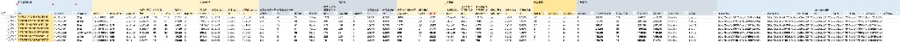
以下为各需求共用源数据，统一说明取数方式与用途：
| 项目 | 说明 |
|---|---|
| 来源 | 手动导入 |
| 说明 | 维护 TK 达人/账号信息，列包括 Username、昵称、TikTok uid 等，供视频/直播数据与账号维度关联使用；需人工导入或更新。 |
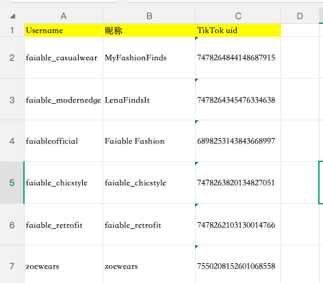
| 项目 | 说明 |
|---|---|
| 来源 | TK 后台 |
| 步骤 1 | 店铺后台 → 数据分析 → 商品数据分析；店铺：美区跨境1/2/3店、英国直邮店:GB |
| 步骤 2 | 商品数据分析 → 在售 → 筛选日期（最新日期）→ 导出 product_list 表 |
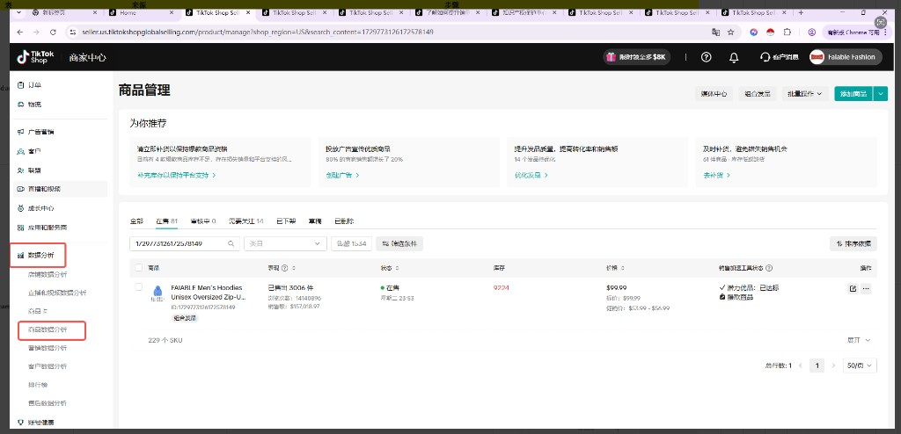
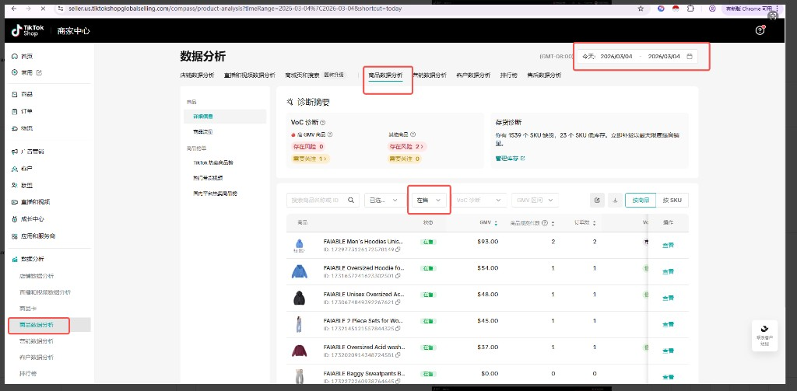
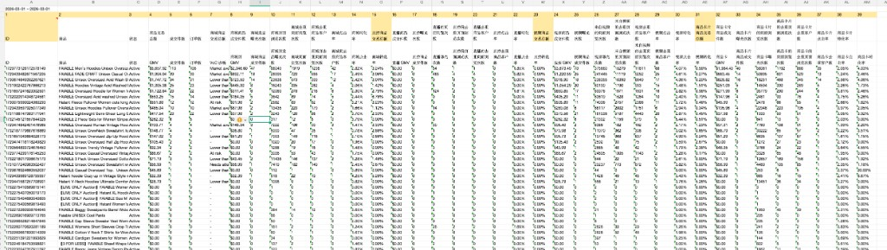
| 项目 | 说明 |
|---|---|
| 来源 | TK 后台 |
| 步骤 1 | 店铺后台 → 广告营销 → 店铺广告；店铺：美区跨境1店、美区跨境3店、英国直邮店:GB；时间：最新时间 |
| 步骤 2 | 筛选前一天日期 → 导出 → 实时推广系列数据导出 → 导出 Product campaign data 表 |
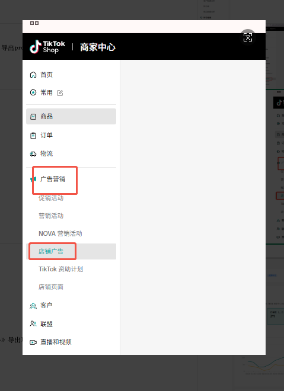
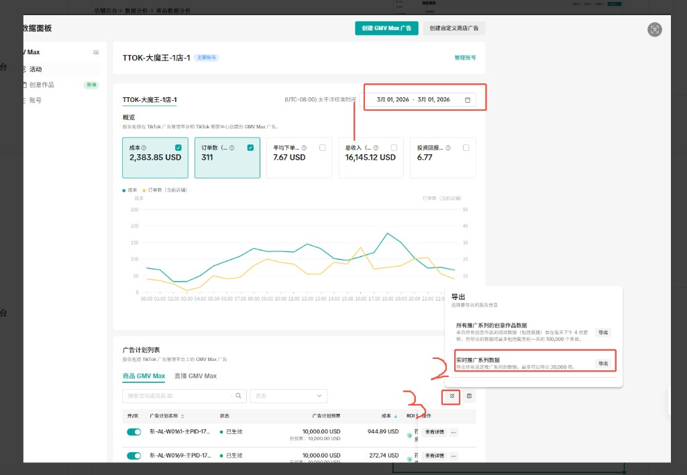
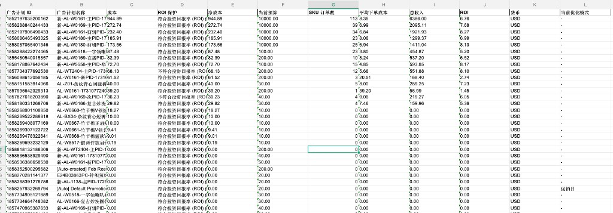
| 项目 | 说明 |
|---|---|
| 来源 | 积加（或 TK 后台，以实际为准） |
| 步骤 1 | 积加 → 数据分析 → 直播和视频数据分析 → 视频-详细信息 → 筛选最新时间；店铺：美区跨境1/2/3店、英国直邮店:GB |
| 步骤 2 | 导出数据 → 等待加载完成后下载 → 导出 Video Performance List 表 |
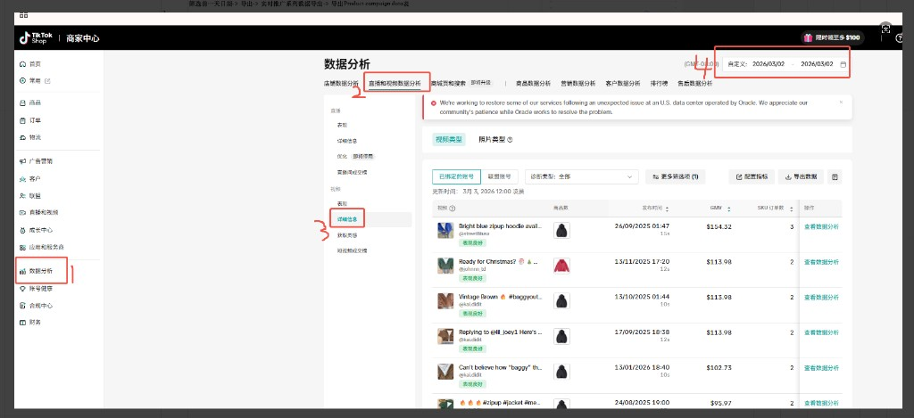
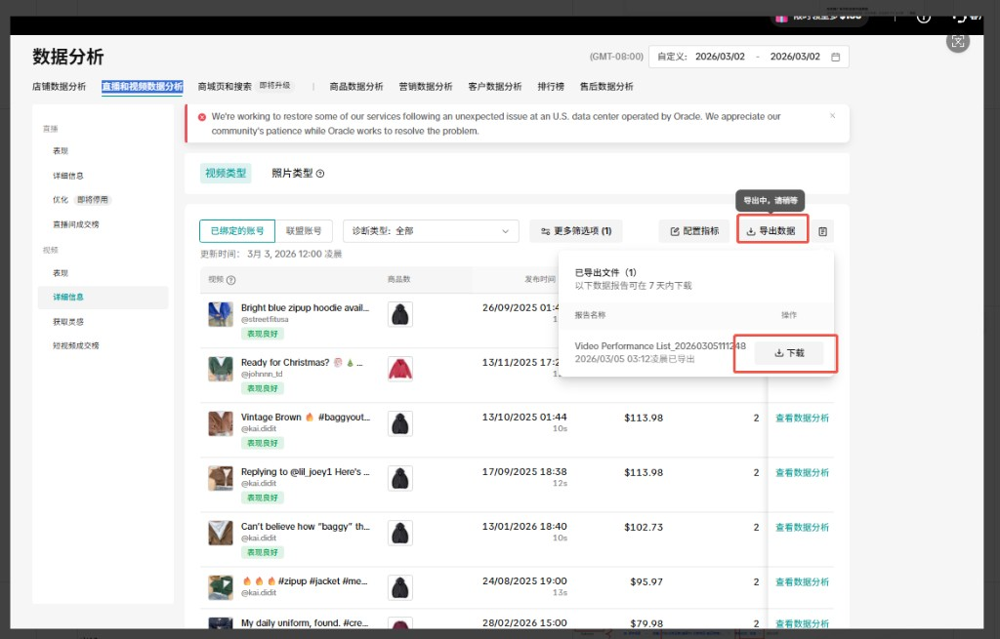
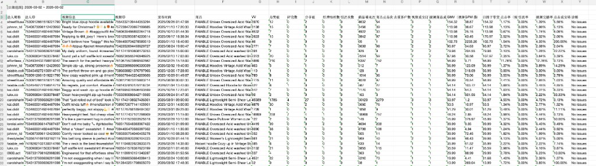
| 项目 | 说明 |
|---|---|
| 来源 | 积加后台 |
| 步骤 1 | 积加 → 销售 → 商品管理 → 全渠道商品 → 筛选店铺 → 筛选在售；店铺：美区跨境1/2/3店、英国直邮店:GB |
| 步骤 2 | 导出 → 根据所选字段导出 → 导出全渠道商品表 |
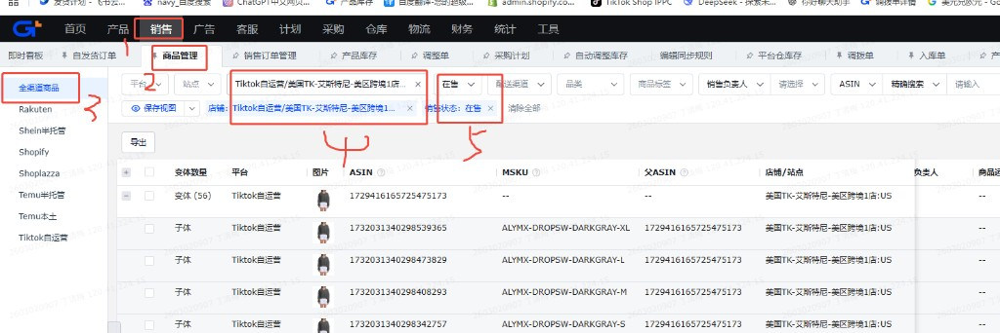
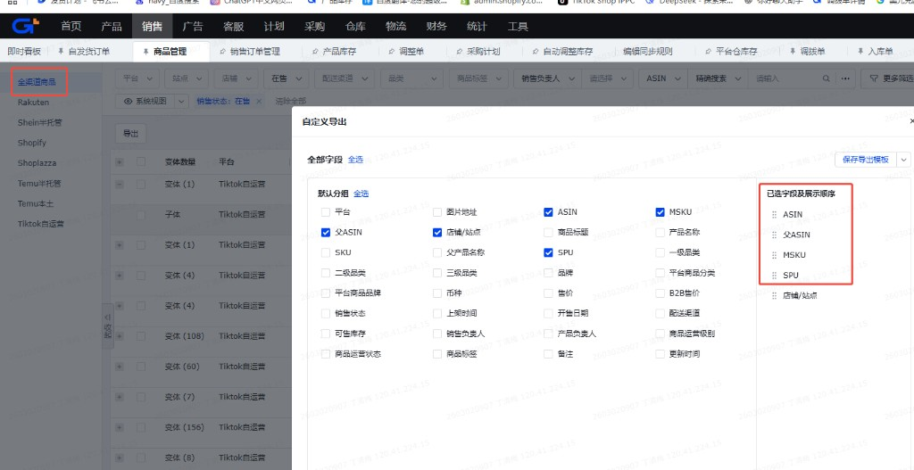
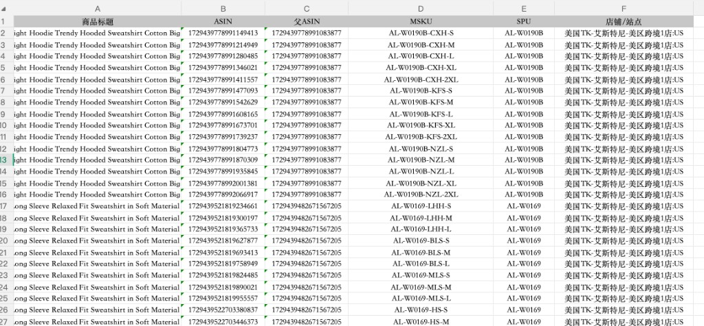
| 项目 | 说明 |
|---|---|
| 来源 | API 接口 |
| 步骤 1 | 调用订单相关 API 接口，按店铺（美区跨境1/2/3店、英国直邮店:GB）、订单付款时间（如最新日期的前一天）等条件请求数据 |
| 步骤 2 | 对接返回的订单明细，按需落表或入仓，供 GMV 计算与数据看板使用 |
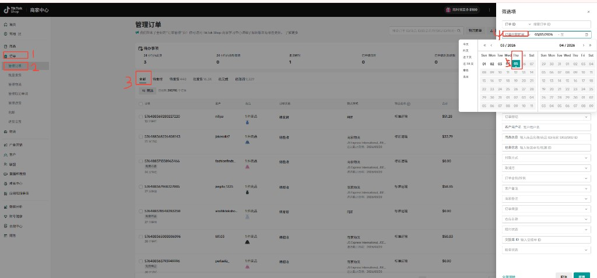
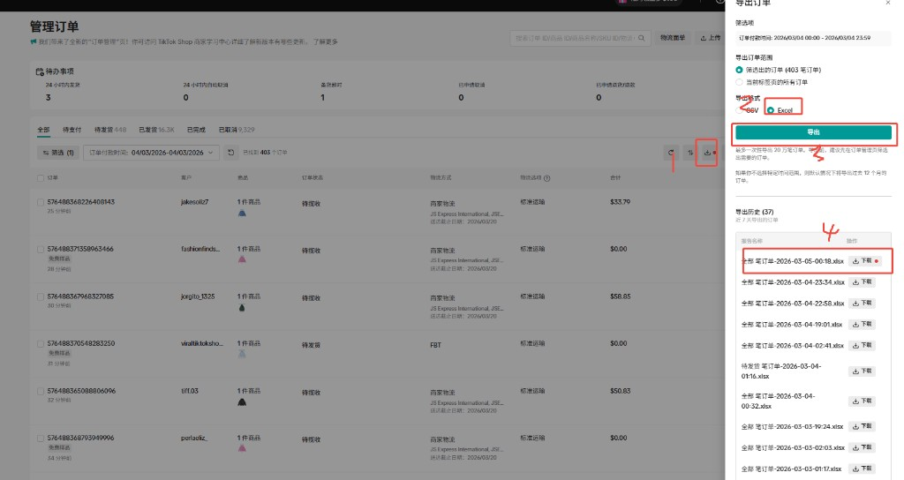
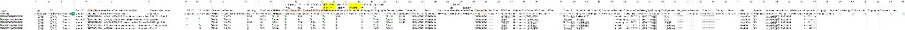
| 需求 | 核心动作 | 使用的源数据 | 产出 |
|---|---|---|---|
| 需求一 | 按映射表做 GMV 计算表 | 全部笔订单 + 全渠道商品表 | GMV计算表（PID 维度，供看板使用） |
| 需求二 | 按映射表做数据看板 | 源数据统一梳理 5 张表 + GMV计算 | 数据看板（PID 维度，GMV/渠道/广告指标） |
详细映射行（含公式、列号）见 docs/PID销售趋势映射表.xlsx 的「映射表」sheet。
每半小时更新一次最新数据，基于 API 接口（TikTok、积加）。